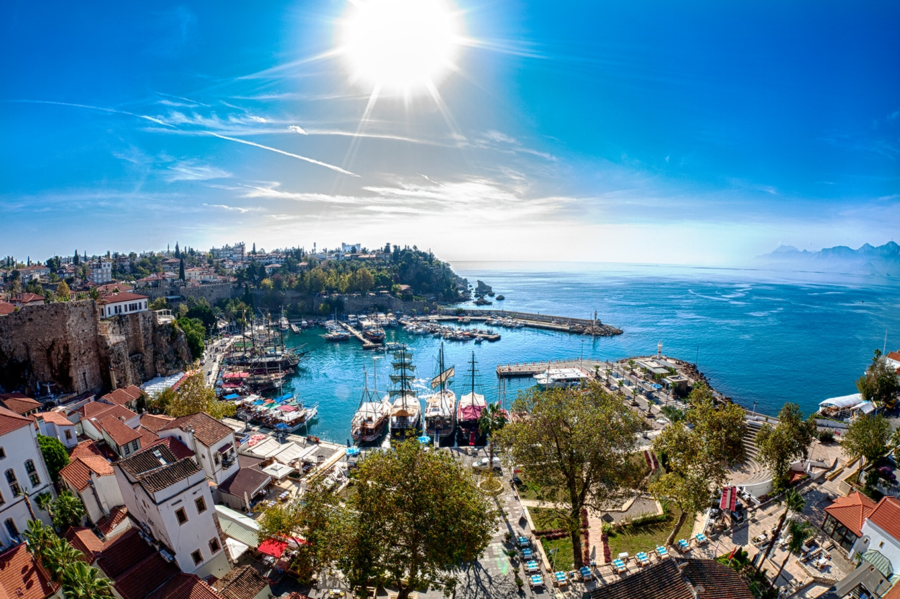

HOME |
HISTORIA |
CULTURA |
GEOGRAFIA |
DADOS |
CURIOSIDADES |
TURISMO |
CONTATO |
Cidades turísticas da Turquia
1.Istambul

Istambul é a única do mundo que se estende por dois continentes, Europa e Ásia. É repleta de locais históricos como a Basílica de Santa Sofia, a Mesquita Azul e o Palácio de Topkapi.
2.Capadócia
Famosa por suas formações rochosas únicas e paisagens surreais, a Capadócia é um destino imperdível. Você pode fazer passeios de balão de ar quente sobre os vales e vilarejos pitorescos.
3.Troía
Lar da lendária Guerra de Troia, este sítio arqueológico é uma parada essencial para os amantes da história.
4.Ankara
A capital da Turquia abriga o Mausoléu de Atatürk, dedicado ao fundador da Turquia moderna, Mustafa Kemal Atatürk, e também possui museus fascinantes e uma atmosfera urbana animada.
5.Antália

Esta cidade à beira-mar é conhecida por suas praias deslumbrantes, bem como por sua cidade velha pitoresca, repleta de ruas de paralelepípedos e edifícios históricos.
Lucas Alves 2024 - ©Todos os direitos reservados.